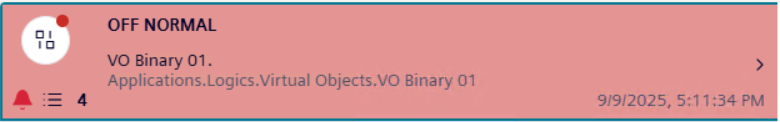
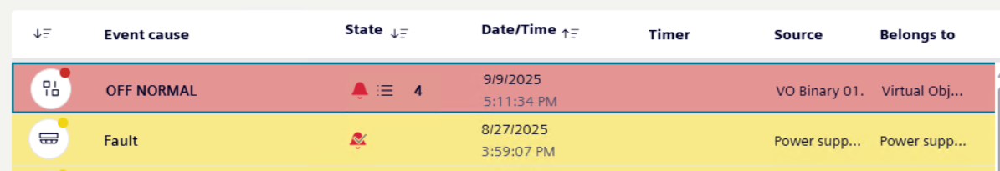
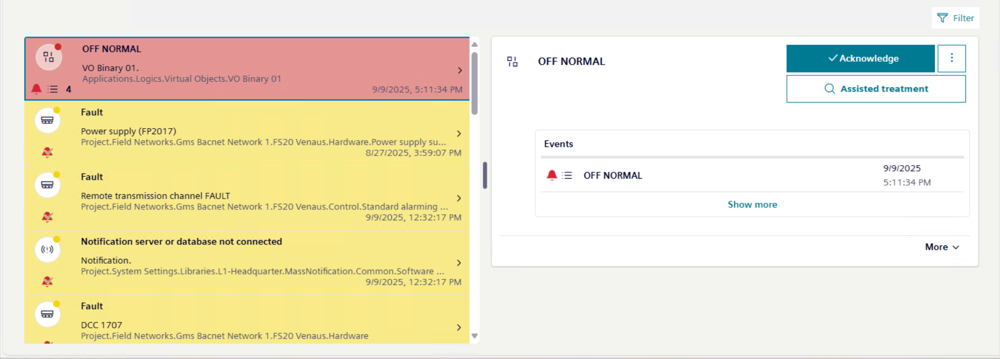
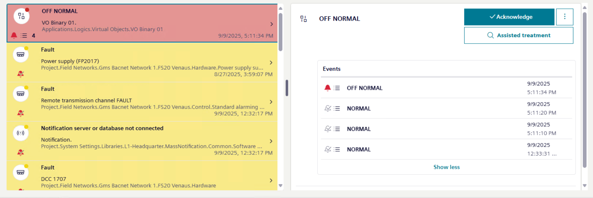
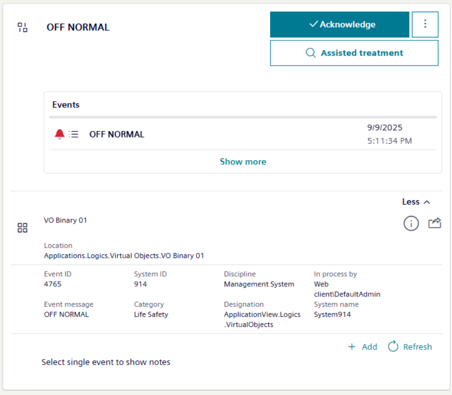
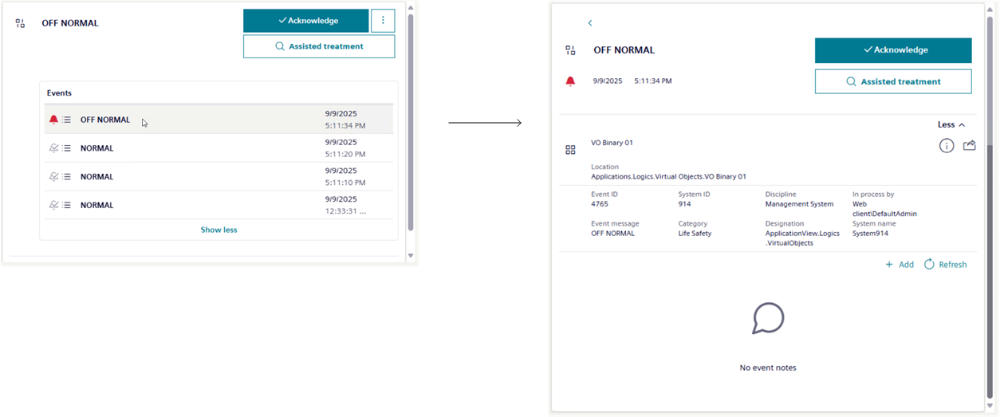

Handling Recurrences of an Event
A recurring event occurs when the same event source repeatedly generates the same alarm condition. More specifically, this happens when the same property of a field point continuously switches between the active and quiet states.
If allowed by the Flex Client profile, in Event List, recurring events are grouped together by the most recent recurrence of that event, along with the total number of recurrences indicated by a counter as follows depending on Event List resize:
- Under the event icon:
- in the State column:


This counter automatically increments whenever the same event recurs and decreases whenever an individual recurrence is reset.
After you select an event with recurrences in Event List, the most recent recurrence of that event displays in the event details on the right under the Events section, along with event commands and information.

After you select Show more, the full list of recurrences displays under the Events section. The event recurrences in this list are always sorted by date and time in ascending order, irrespective of any sorting applied to events in Event List.

Handle all Recurrences of an Event Together
You can handle all the recurrences of an event at the same time directly from the event details after you select the most recent recurrence of that event in Event List.

- In Event List, a counter indicates that some recurrences of the same event occurred for an event.
- Select the event with recurrences (this event always corresponds to the most recent recurrence of that event).
- The most recent recurrence of that event displays under Events among the event details.
- Depending on availability, handle the recurrences with investigative or assisted treatment as described in Handling an Event with Investigative Treatment or Handling an Event with Assisted Treatment.
- Then method you use affects all even recurrences. For example, if you start investigative or assisted treatment for the most recent recurrence of that event in Event List, for all its recurrences investigative treatment or assisted treatment is started as well.
- Send commands as described in Send Event Handling Commands.
- Each command you send is sent to all event recurrences. For example, if you acknowledge the most recent recurrence of that event in Event List, all its recurrences are acknowledged as well. Furthermore, at the bottom, a text suggests selecting a single recurrence to view any relevant event notes.
Handle Individual Recurrences Separately
You can handle one or more individual recurrences of an event separately, rather than handling them all at the same time from the most recent recurrence of that event in Event List.

- You already selected an event with recurrences, and the most recent recurrence of that event displays under Events among the event details.
- Select Show more to view the full list of all the event recurrences under Events, with the most recent on top.
- Show more switches to Show less to close the list and go back to the most recent recurrence.
- Select the recurrence you want to handle.
- The event details refresh to display only the selected event. You can go back to the list of event recurrences by selecting .
- Depending on availability, handle this recurrence with investigative or assisted treatment as described in Handling an Event with Investigative Treatment or Handling an Event with Assisted Treatment.
- Then method you use affects only the selected event recurrence.
- Send commands for this recurrence, as described in Send Event Handling Commands.
- Each command will only be sent to the selected event recurrence. When you finish handling an individual recurrence (typically, after sending the reset command), it will be cleared from the list.
Since the topmost recurrence corresponds to the event with recurrences, any commands you send to it will also affect this event recurrence. - The topmost recurrence is cleared from Event List only after all its recurrences have been handled.
Once the topmost recurrence is cleared from the list, the next most recent recurrence in the set becomes the topmost one, and the details of the event with recurrences will refresh to show the relevant data in Event List.
Depending on configuration, the oldest recurrence can be cleared only after all the other recurrences have been handled.